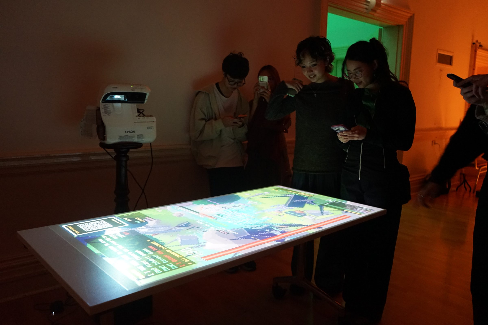
Pack Mentality is a phone-based multiplayer installation where a crowd gathers together to populate a collective screen. It combines game design (Unity on the collective screen) and web design (html, css & js on the user’s phone). Where the QR code of the installation becomes the door to the user interacting with the environment.
I’ve developed this idea of wanting an interactive diorama since my bachelor studies in Digital Media, combined with the website hosted on the phone component developed further post-graduate studies that included projects like SOS2 to stress-test those initial ideas back in 2024. That core idea of linking an interactive component linked with a user’s phone by taking them to a website ultimately kicked off a series of works in this very format.
User’s phone > QR Code > Collective experience.
This project became the flagship piece of my practice thus far. It was the longest standing project that I’ve ever worked on, expanding from first year MAGI (CPS class) until now. It’s undergone the most transformational major updates as it goes into dissemination mode. Several playtests this year have given the direction and decisions that will eventually lead to the project’s final completion.
The game design itself consists of player’s choosing a role, then opening categories of playing cards that spawn in whatever that card is shown as.
Each card has a unique abiility that directly effects what is being shown in the envrionemnt. The envrironment then responds to those cards being chosen. Each interaction contribues to a progress counter, which then sends in waves of enemies that they player can react to using their cards.
Their collective goal is feed the environment and fend off monsters as they do so.
The game mechanics are inspired by games such as World of Warcraft Classic (Dungeon gameplay loop). Risk of Rain 2 (ability mechanics and visuals) and Terraria (art direction). It’s really just been a huge passion project inspired by a lot of the games I’ve played in the past. I’ve attempted to synthesise a succinct experience in an installation design format where player’s are forced to gather around socially. The games latest iterations attempt to foster and play with those incidental conditions.
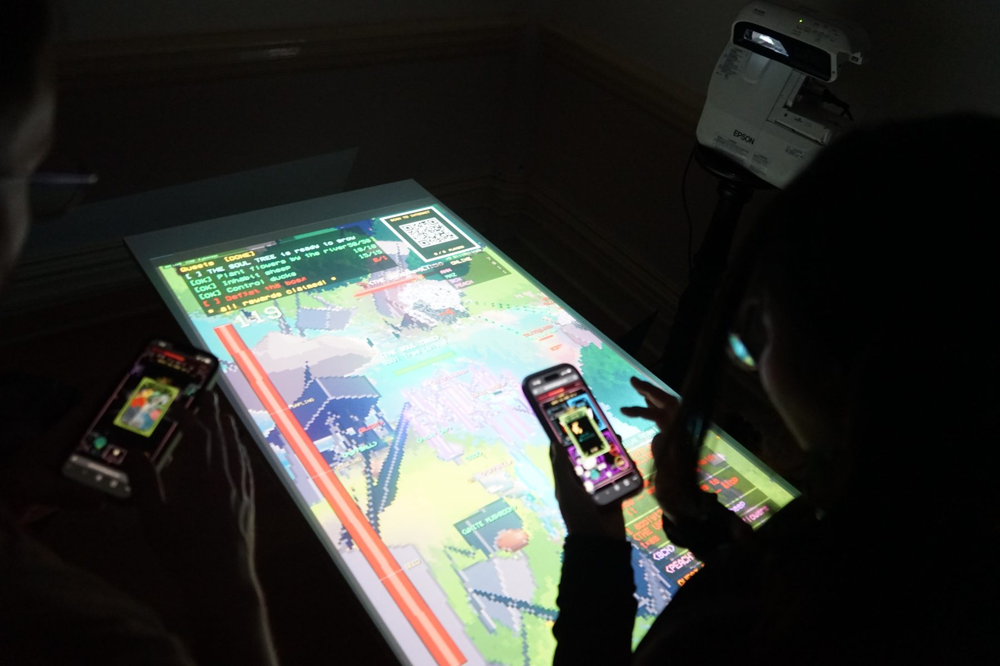
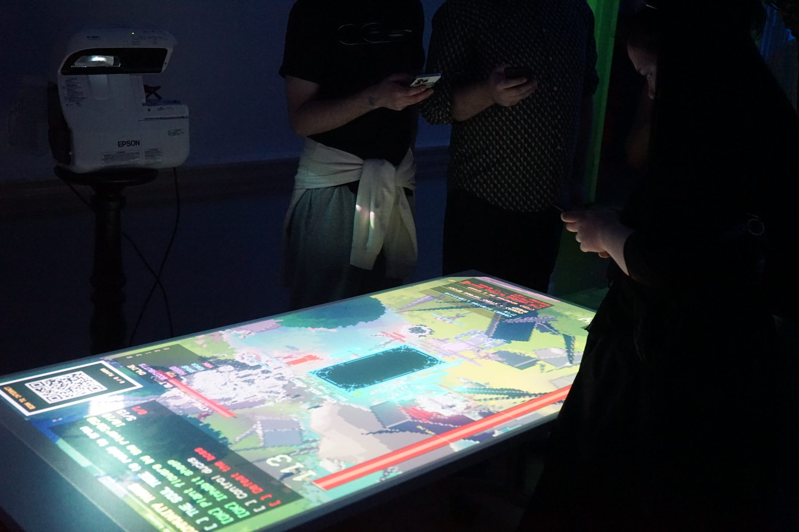
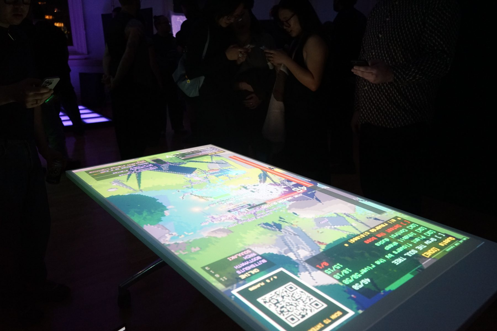
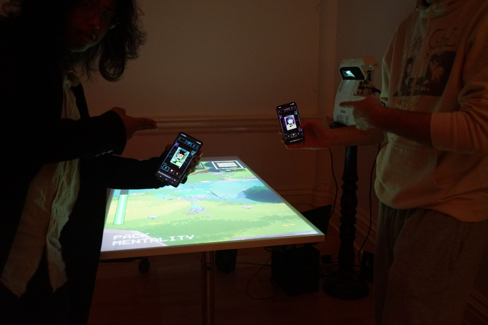
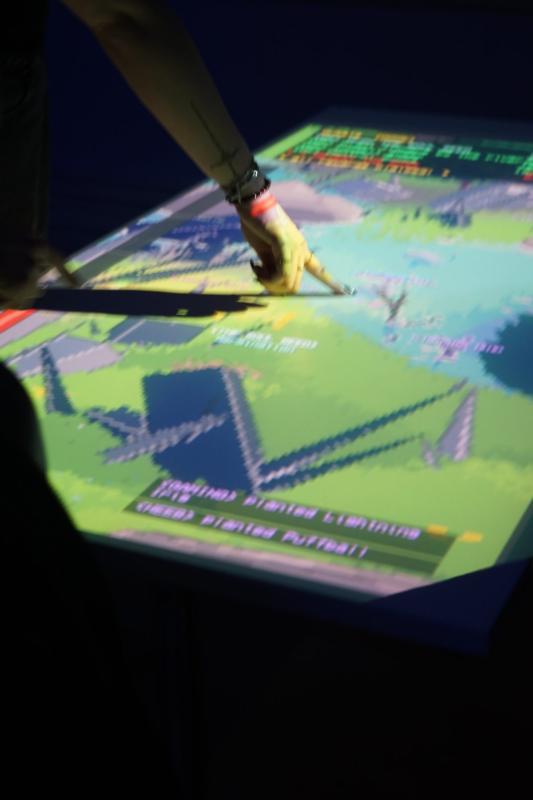
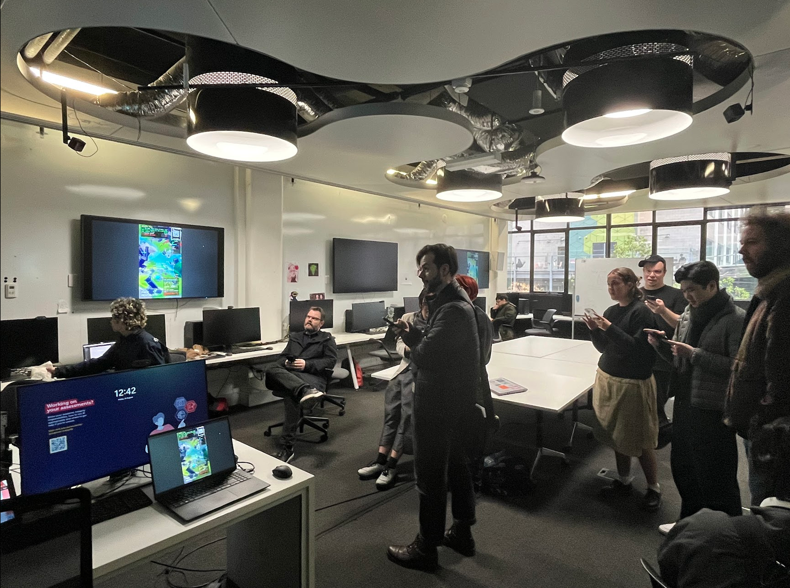
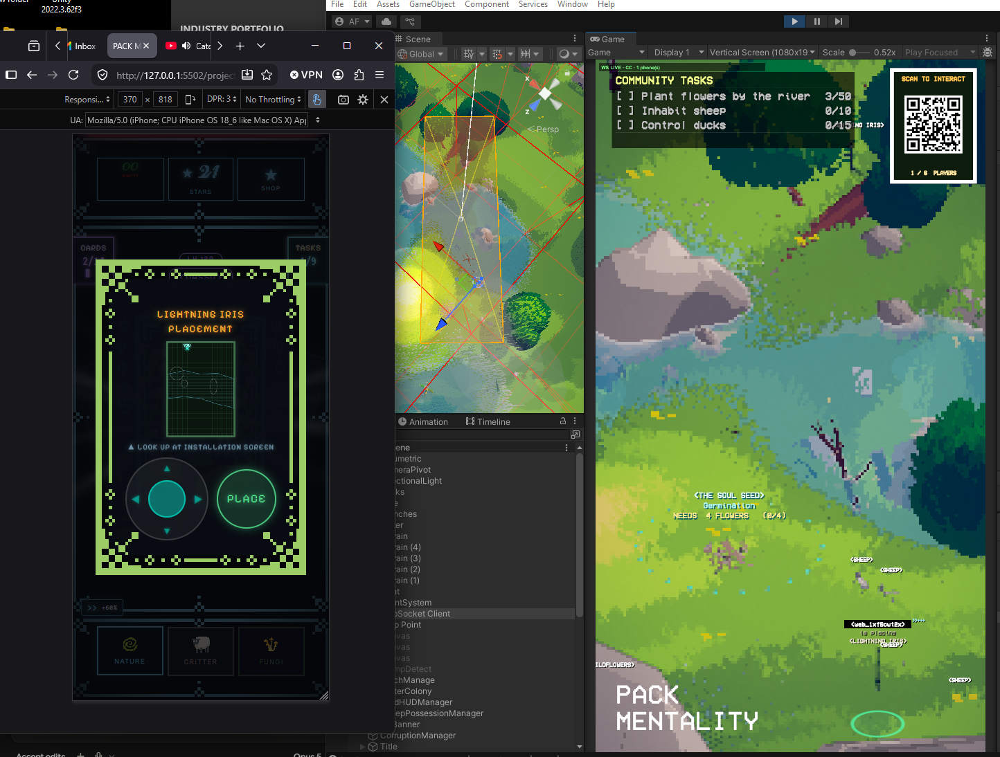
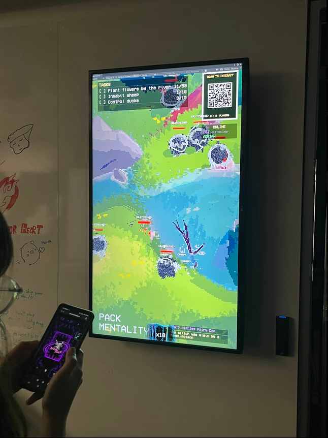
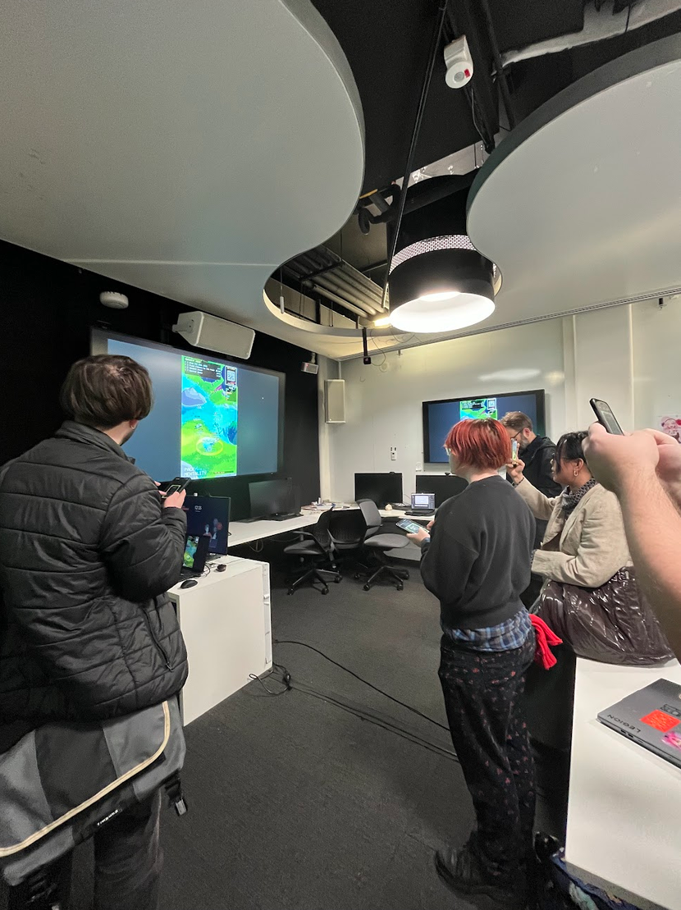
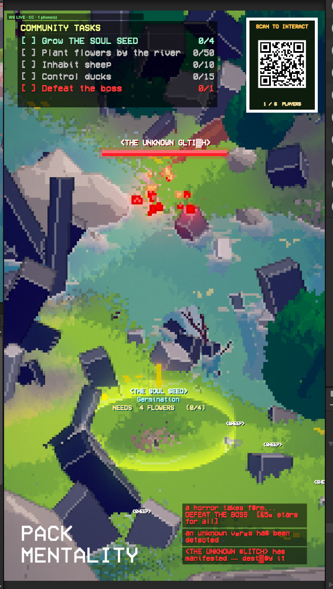
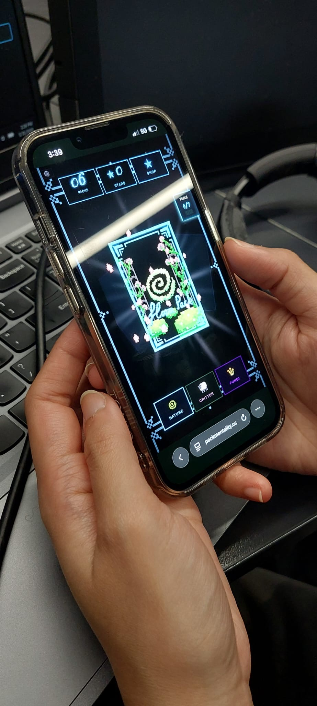